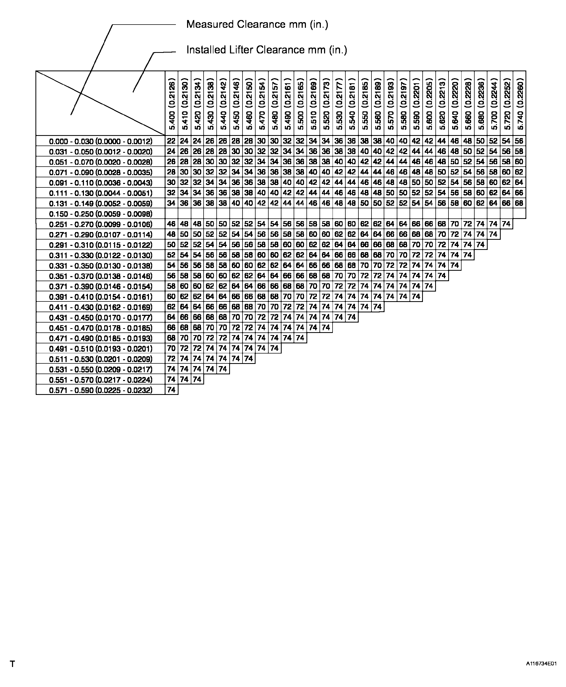
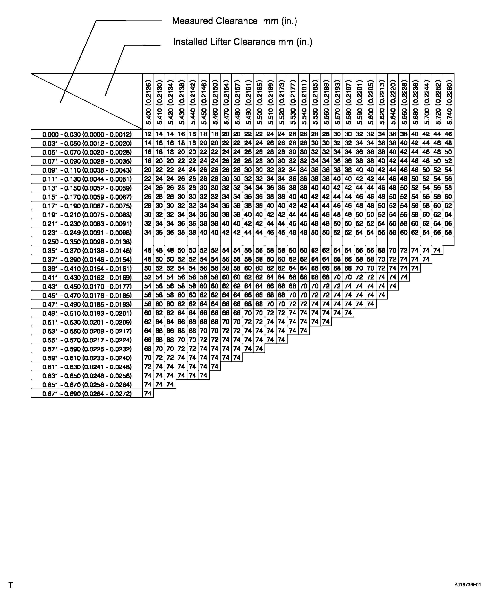
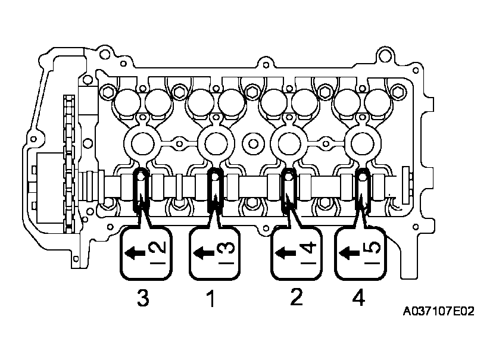
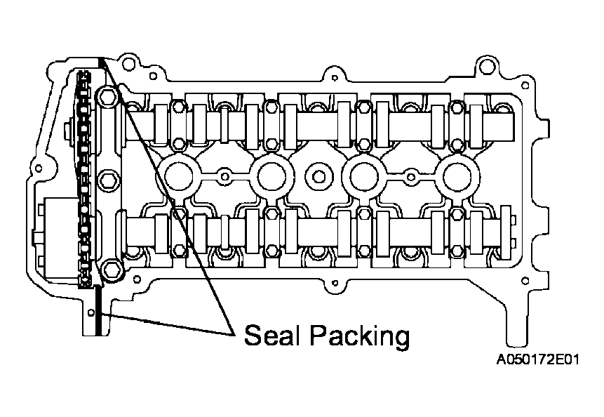
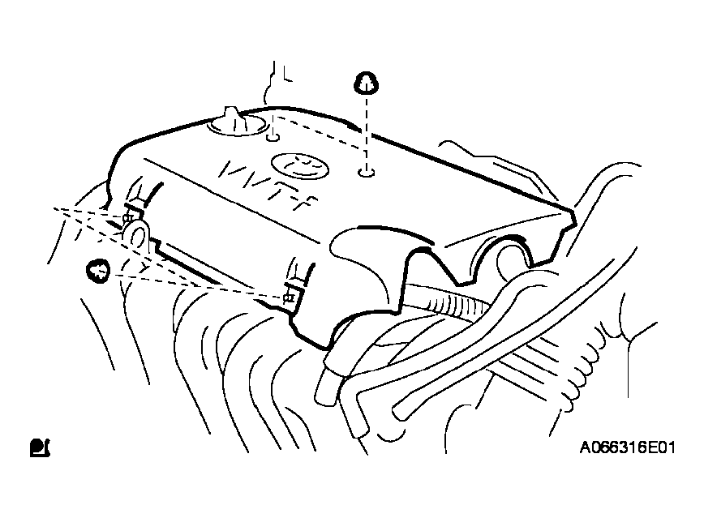

Valve Clearance: Adjustment
- DISCONNECT CABLE FROM NEGATIVE BATTERY TERMINAL CAUTION: Wait at least 90 seconds after disconnecting the cable from the negative (-) battery terminal to prevent airbag and seat belt pretensioner activation.
- REMOVE NO. 2 CYLINDER HEAD COVER
- Remove the 4 nuts and cylinder head cover.
- REMOVE IGNITION COIL
- Remove the 4 bolts and pull out the 4 ignition coils.
- DISCONNECT VENTILATION HOSE
- Disconnect the ventilation hose from the cylinder head cover.
- DISCONNECT NO. 2 VENTILATION HOSE
- Disconnect the ventilation hose from the cylinder head cover.
- REMOVE CYLINDER HEAD COVER
- Remove the 9 bolts, 2 nuts and cylinder head cover.
- REMOVE ENGINE UNDER COVER RH
- INSPECT VALVE CLEARANCE
HINT:
Inspect and adjust the valve clearance when the engine is cold.
- Set the No. 1 cylinder to TDC/compression.
- Turn the crankshaft pulley until its timing notch and the timing mark 0 of the chain cover are aligned.
- Check that both timing marks on the camshaft timing sprocket and camshaft timing gear are facing upward as shown in the illustration.
If not, turn the crankshaft 1 complete revolution (360°) and align the marks as above.
- Check the valves indicated in the illustration.
- Using a feeler gauge, measure the clearance between the valve lifter and camshaft.
Standard valve clearance (Cold)
VALVE CLEARANCE SPECIFICATIONItem Specified Condition Intake 0.15 to 0.25 mm (0.006 to 0.010 in.) Exhaust 0.25 to 0.35 mm (0.010 to 0.014 in.) - Record any out-of-specification valve clearance measurements. They will be used later to determine the required replacement adjusting shim.
- Using a feeler gauge, measure the clearance between the valve lifter and camshaft.
- Turn the crankshaft 1 complete revolution until its timing notch and the timing mark 0 of the chain cover are aligned.
- Check the valves indicated in the illustration.
- Using a feeler gauge, measure the clearance between the valve lifter and camshaft.
Standard valve clearance (Cold)
VALVE CLEARANCE SPECIFICATIONItem Specified Condition Intake 0.15 to 0.25 mm (0.006 to 0.010 in.) Exhaust 0.25 to 0.35 mm (0.010 to 0.014 in.) - Record any out-of-specification valve clearance measurements. They will be used later to determine the required replacement adjusting shim.
- Using a feeler gauge, measure the clearance between the valve lifter and camshaft.
- Set the No. 1 cylinder to TDC/compression.
- ADJUST VALVE CLEARANCE
- Rotate the crankshaft pulley.NOTE: When rotating the camshaft with the timing chain removed, rotate the crankshaft damper counterclockwise 40° from the TDC and align its timing notch with the matchmark of the timing chain cover to prevent the pistons from coming into contact with the valves.
- Set the No. 1 cylinder to the TDC/compression.
- Turn the crankshaft pulley until its timing notch and timing mark 0 of the chain cover are aligned.
- Check that both timing marks on the camshaft timing sprocket and valve timing controller assembly are facing upward as shown in the illustration.
If not, turn the crankshaft 1 complete revolution (360°) and align the marks as above.
- Put paint marks on the timing chain where the timing marks of the camshaft timing sprocket and the camshaft timing gear are located.
- Using an 8 mm hexagon wrench, remove the screw plug.
- Insert a screwdriver into the service hole of the chain tensioner to hold the stopper plate of the chain tensioner at an upward position.
- Using a wrench, rotate the No. 2 camshaft clockwise to push in the plunger of the chain tensioner.
- Remove the screwdriver from the service hole, and then align the hole of the stopper plate with the service hole and insert a 2 to 3 mm (0.08 to 0.12 in.) diameter bar into the holes to hold the stopper plate.
HINT:
- Fix the stopper plate in place using the bar while rotating the camshaft right and left slightly.
- Hold the bar with tape so that the bar does not come off.
- Using SST, hold the camshaft with a wrench on the hexagonal lobe, and remove the bolt.
SST 09023-38400
- Using several steps, uniformly loosen and remove the 11 bearing cap bolts in the sequence shown in the illustration. Then remove the 5 bearing caps.NOTE: Loosen each bolt uniformly, keeping the camshaft level.
- Remove the flange bolt with the No. 2 camshaft lifted up. Then detach the No. 2 camshaft and the camshaft timing sprocket.
- Using several steps, uniformly loosen and remove the 8 bearing cap bolts in the sequence shown in the illustration. Then remove the 4 bearing caps.NOTE: Loosen each bolt uniformly, keeping the camshaft level.
- Hold the timing chain by hand, and remove the camshaft and the camshaft timing gear assembly.
- Tie the timing chain with a string as shown in the illustration.NOTE: Be careful not to drop anything inside the timing chain cover.
- Remove the valve lifters.
- Using a micrometer, measure the thickness of the removed lifter.
- Calculate the thickness of a new lifter so that the valve clearance comes within the specified value.LIFTER THICKNESS REFERENCE
A New lifter thickness B Used lifter thickness C Measured valve clearance New lifter thickness
LIFTER THICKNESS SPECIFICATIONItem Thickness Intake A = B + (C - 0.20 mm (0.008 in.)) Exhaust A = B + (C - 0.30 mm (0.012 in.)) - Select a new lifter with the thickness as close to the calculated values as possible.
EXAMPLE: (Intake)
Measured valve clearance = 0.40 mm (0.0158 in.)
0.40 mm (0.0158 in.) - 0.20 mm (0.0079 in.) = 0.20 mm (0.0079 in.)
(Measured - Specification = Excess clearance)
Used lifter measurement = 5.25 mm (0.2067 in.)
0.20 mm (0.0079 in.) + 5.25 mm (0.2067 in.) = 5.45 mm (0.2146 in.)
(Excess clearance + Used lifter = Ideal new lifter)
Closest new lifter = 5.45 mm (0.2146 in.)
Select No. 46 lifter (5.46 mm (0.2150 in.))
HINT:
- Lifters are available in 35 sizes in increments of 0.020 mm (0.0008 in.), from 5.060 mm (0.1992 in.) to 5.740 mm (0.2260 in.).
- Refer to the NEW LIFTER THICKNESS TABLE below.
- Valve lifter selection chart (intake)
- Valve lifter selection chart (intake) (continued).

Courtesy of © TOYOTA, LICENSE AGREEMENT TMS1002New lifter thickness
LIFTER THICKNESS SPECIFICATIONLifter No. Thickness Lifter No. Thickness Lifter No. Thickness 06 5.060 mm (0.1992 in.) 30 5.300 mm (0.2087 in.) 54 5.540 mm (0.2181 in.) 08 5.080 mm (0.2000 in.) 32 5.320 mm (0.2094 in.) 56 5.560 mm (0.2189 in.) 10 5.100 mm (0.2008 in.) 34 5.340 mm (0.2102 in.) 58 5.580 mm (0.2197 in.) 12 5.120 mm (0.2016 in.) 36 5.360 mm (0.2110 in.) 60 5.600 mm (0.2205 in.) 14 5.140 mm (0.2024 in.) 38 5.380 mm (0.2118 in.) 62 5.620 mm (0.2213 in.) 16 5.160 mm (0.2031 in.) 40 5.400 mm (0.2126 in.) 64 5.640 mm (0.2220 in.) 18 5.180 mm (0.2039 in.) 42 5.420 mm (0.2134 in.) 66 5.660 mm (0.2228 in.) 20 5.200 mm (0.2047 in.) 44 5.440 mm (0.2142 in.) 68 5.680 mm (0.2236 in.) 22 5.220 mm (0.2055 in.) 46 5.460 mm (0.2150 in.) 70 5.700 mm (0.2244 in.) 24 5.240 mm (0.2063 in.) 48 5.480 mm (0.2157 in.) 72 5.720 mm (0.2252) 26 5.260 mm (0.2071 in.) 50 5.500 mm (0.2165 in.) 74 5.740 mm (0.2260) 28 5.280 mm (0.2079 in.) 52 5.520 mm (0.2173 in.) - - Standard intake valve clearance (Cold): 0.15 to 0.25 mm (0.006 to 0.010 in.)
EXAMPLE:
The 5.250 mm (0.2067 in.) lifter is installed, and the measured clearance is 0.400 mm (0.0158 in.).
Replace the 5.250 mm (0.2067 in.) lifter with a new No. 46 lifter.
- Valve lifter selection chart (exhaust).
- Valve selection chart (exhaust) (continued).

Courtesy of © TOYOTA, LICENSE AGREEMENT TMS1002New lifter thickness
LIFTER THICKNESS SPECIFICATIONLifter No. Thickness Lifter No. Thickness Lifter No. Thickness 06 5.060 mm (0.1992 in.) 30 5.300 mm (0.2087 in.) 54 5.540 mm (0.2181 in.) 08 5.080 mm (0.2000 in.) 32 5.320 mm (0.2094 in.) 56 5.560 mm (0.2189 in.) 10 5.100 mm (0.2008 in.) 34 5.340 mm (0.2102 in.) 58 5.580 mm (0.2197 in.) 12 5.120 mm (0.2016 in.) 36 5.360 mm (0.2110 in.) 60 5.600 mm (0.2205 in.) 14 5.140 mm (0.2024 in.) 38 5.380 mm (0.2118 in.) 62 5.620 mm (0.2213 in.) 16 5.160 mm (0.2031 in.) 40 5.400 mm (0.2126 in.) 64 5.640 mm (0.2220 in.) 18 5.180 mm (0.2039 in.) 42 5.420 mm (0.2134 in.) 66 5.660 mm (0.2228 in.) 20 5.200 mm (0.2047 in.) 44 5.440 mm (0.2142 in.) 68 5.680 mm (0.2236 in.) 22 5.220 mm (0.2055 in.) 46 5.460 mm (0.2150 in.) 70 5.700 mm (0.2244 in.) 24 5.240 mm (0.2063 in.) 48 5.480 mm (0.2157 in.) 72 5.720 mm (0.2252 in.) 26 5.260 mm (0.2071 in.) 50 5.500 mm (0.2165 in.) 74 5.740 mm (0.2260 in.) 28 5.280 mm (0.2079 in.) 52 5.520 mm (0.2173 in.) - - Standard exhaust valve clearance (Cold): 0.25 to 0.35 mm (0.010 to 0.014 in.)
EXAMPLE:
The 5.340 mm (0.2102 in.) lifter is installed, and the measured clearance is 0.440 mm (0.0173 in.).
Replace the 5.340 mm (0.2102 in.) lifter with a new No. 48 lifter.
- Reinstall the valve lifters.
- Apply a light coat of engine oil to the camshaft journals.
- Install the timing chain onto the camshaft timing gear with the paint mark and the timing mark aligned as shown in the illustration.
- Examine the front marks and numbers, and tighten the bolts in the sequence shown in the illustration.

Courtesy of © TOYOTA, LICENSE AGREEMENT TMS1002Torque: 13 N*m (133 kgf*cm, 9 ft.*lbf)
NOTE: Tighten each bolt uniformly, keeping the camshaft level. - Hold the timing chain, and align the timing mark on the camshaft timing sprocket with the paint mark of the timing chain.
- Align the alignment pin hole on the camshaft timing sprocket with the alignment pin of the camshaft, and install the sprocket into the camshaft.
- Temporarily install the timing sprocket bolt.
- Examine the front marks and numbers, and tighten the bolts in the sequence shown in the illustration.
Torque: 13 N*m (129 kgf*cm, 9 ft.*lbf)
NOTE: Tighten each bolt uniformly, keeping the camshaft level. - Install the No. 1 bearing cap.
Torque: 23 N*m (235 kgf*cm, 17 ft.*lbf)
- (aa) Using SST, hold the camshaft with a wrench on the hexagon lobe, and install the bolt.
SST 09023-38400
Torque: 64 N*m (653 kgf*cm, 47 ft.*lbf)
- (ab) Remove the bar from the timing chain tensioner.
- (ac) Turn the crankshaft pulley until its timing notch and the timing mark 0 of the chain cover are aligned.
- (ad) Check that all the pairs of the timing marks are aligned.
- (ae) Apply seal packing to 2 or 3 threads of the screw plug end.
Seal packing: Part No. 08833-00070 or equivalent
- (af) Using an 8 mm hexagon wrench, install the screw plug.
Torque: 15 N*m (153 kgf*cm, 11 ft.*lbf)
- Rotate the crankshaft pulley.
- INSTALL CYLINDER HEAD COVER
- Apply seal packing to the 2 locations shown in the illustration.
Seal packing: Part No. 08826-00080 or equivalent

Courtesy of © TOYOTA, LICENSE AGREEMENT TMS1002NOTE:- Remove any oil from the contact surface.
- Install the cylinder head cover within 3 minutes of applying seal packing.
- Do not start the engine for at least 2 hours after installation.
- Install the cylinder head cover with the 9 bolts, 2 seal washers and 2 nuts.
- Using several steps, uniformly tighten the bolts and nuts in the sequence shown in the illustration.
Torque: 10 N*m (102 kgf*cm, 7 ft.*lbf)
- Apply seal packing to the 2 locations shown in the illustration.
- INSTALL IGNITION COIL
- Install the 4 ignition coils with the 4 bolts.
Torque: 9.0 N*m (92 kgf*cm, 80 in.*lbf)
- Install the 4 ignition coils with the 4 bolts.
- INSTALL NO. 2 CYLINDER HEAD COVER
- Install the head cover with the 4 nuts.

Courtesy of © TOYOTA, LICENSE AGREEMENT TMS1002Torque: 9.0 N*m (92 kgf*cm, 80 in.*lbf)
- Install the head cover with the 4 nuts.
- INSPECT ENGINE OIL LEAKS
- CONNECT CABLE TO NEGATIVE BATTERY TERMINAL